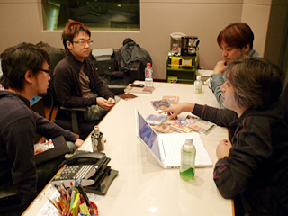
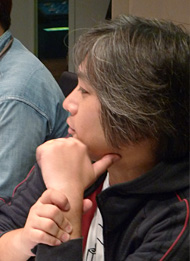
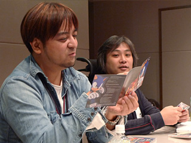

瀬上：今日は、ソニック・ザ・ヘッジホッグのベスト盤のパート2となる「トゥルー・カラーズ」の発売記念として、座談会を催してみようということで、ソニック関連のサウンドを手掛ける面々に集まってもらいました。
この4名に、熊谷と南波という女性コンポーザーを加えたメンバーが、この「トゥルー・カラーズ」の中心メンバーとなるわけですが、まずは本作「トゥルー・カラーズ」のことを簡単に僕から話そうかな。
ソニックのベスト盤の第一弾となった前作の「トゥルー・ブルー」は、任天堂さんの『大乱闘スマッシュブラザーズＸ』に歴代のソニックの楽曲が使われたタイミングでまとめておきたいと思って企画立案したタイトルだったのね。『ソニックCD』のアメリカ版の曲が入っていたりするのも、『大乱闘スマッシュブラザーズＸ』の収録曲のひとつだったから、それに倣った感じで。

で、楽曲の選曲自体は、一本の筋を通して狙いを絞るためにソニックのテーマに限定してみたんだけど、音源化されていないのは何だろうな？って考えてね。アメリカで放送されていたアニメ、「ソニック X」の曲はすごくノリが良くてマッチしていたから、それを日本のソニックファンに紹介してみたかったし。
ベスト盤というと、今までにリリースされた代表曲の寄せ集めというイメージがあるとは思うんだけど、それだけだと、今までのアイテムを全て持ってくれている方にとっては、魅力が薄いものになってしまうよね。
アメリカ版のソニックXの主題歌のように、「存在はしているけれど、初CD化の音源」だけじゃなくて、大谷に作ってもらった『ソニックラッシュアドベンチャー』のリミックスなど、新たに用意した追加曲の存在は大きかったね。
手にしてくれた人には嬉しいポイントだったみたいなので、やって良かった。
実は、その「トゥルー・ブルー」をまとめているときには、既にこの「トゥルー・カラーズ」の構想があってね。そのとき頭の中では2つが同時進行していた、というのが正しいかな。
ソニックの世界を彩るキャラクターたちは大勢いるし、その中にはテーマ曲を持つものも少なくない。多くのキャラクターテーマを作ったのは、『ソニックアドベンチャー』シリーズの頃だったんだけど、その頃のCDは、既に廃盤になっていて、お店で買えない状態になって久しいのね。
また、再リリースして欲しいというリクエストは頂くんだけれども、同じパッケージで出し直すよりも、どうせなら、もっと別なものを足して、より魅力的なものにしたかったんだよね。
ほら、マドンナの曲に「トゥルー・ブルー」ってあって、シンディ・ローパーには「トゥルー・カラーズ」というアルバムがあったじゃない？ブルーというのはソニックを象徴する色だし、キャラクターのテーマを集めたアルバムの方は、楽曲の方向性も多彩でバラエティ豊かなアルバムになるのは間違いなかったので、うってつけのタイトルだなと思っていたんです。

幡谷：で、キャラクターのテーマってどれくらいあるの？
瀬上：『ソニックアドベンチャー』シリーズで、色々と用意しましたね。
床井：ナックルズ、エミー、ビッグ、シャドウにルージュ、あとは？
瀬上：エッグマンも作ったしね、ガンマはロボットだからヴォーカル曲じゃないけどテーマ曲は存在するし。
大谷：その後はシルバーとかですね。
床井：『ソニックライダーズ』の曲は、実はジェットのテーマという括りでもあるんですよ。
瀬上：あ、そうなんだ。
大谷：ヴォーカル曲じゃないですけど、ウェアホッグはバトルのテーマという解釈ですね。
瀬上：「夜ナグル」のテーマね。
幡谷：テーマ曲が無いキャラクターもいるんだよね？
瀬上：『ソニックラッシュ』で出てきたブレイズとかかな。
幡谷：それ、超能力使う人？
大谷：いや、それはシルバーです（笑）。
瀬上：ブレイズは、『ソニックと暗黒の騎士』で、ヴォーカル入りのテーマ曲を作ろうかなとも考えたんですが、登場する時間が短かかったこともあって断念しました。熱い炎と内に秘めたパワーというキーワードや、女性キャラということもあって、フラメンコ調でその登場テーマをまとめてみたんですが、「トゥルー・カラーズ」で、その曲をヴォーカル曲に仕立て上げても良かったよね。2006年の『ソニック・ザ・ヘッジホッグ』の時にもブレイズのヴォーカル曲は作らなかったんだもんね？
大谷：そうですね、ソニック、シャドウ、シルバーという3本のストーリーの柱以外のところは、なるべく膨らまさないように心掛けていたもので。